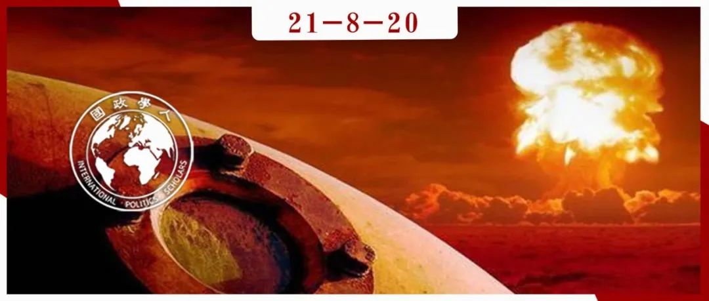

收录于合集

作品简介
作者： Lauren Sukin，斯坦福大学政治系的博士生；
Toby Dalton，卡内基国际和平基金会核政策项目的联合主任和高级研究员。
编译： 赵怡雯（山东大学东北亚学院国际政治专业）
来源： Lauren Sukin & Toby Dalton (2021) Reducing Nuclear Salience：How to Reassure Northeast Asian Allies, The Washington Quarterly , 44:2, 143-158, DOI: 10.1080/0163660X.2021.1934257.
归档： 《国际关系前沿》2021年第8期，总第35期。

内容提要
拜登政府面临的最大外交挑战之一是重振美国的盟友关系。近年来，东欧和东北亚的地区威胁复杂性增强，美国和盟国的政府官员很容易将提高核威慑的重要性纳入考量，认为这会有助于遏制日益增长的地区威胁并安抚盟友。这样的政策考虑在缺乏如北大西洋公约组织形成的多党同盟和核分享制度的东北亚地区尤为凸显。
支持提高核重要性的人声称，美国提前部署核武器，或者与日本和韩国组成核规划组织，将加强对朝鲜和中国的威慑。同时还能增强日韩对与美国安全纽带的信任，并阻止日韩产生发展独立核武库的想法，以此提高安全。
人们普遍认为，日益增长的威胁需要美国在东北亚重新采取联盟威慑和保证措施，这一判断是正确的。然而， 增强核威慑是最好的政策选择吗？这是否会加剧需要解决的问题，刺激美国盟友发展自己的核武器？
本文概述了在美国东北亚联盟中增强核武器重要性这一建议的基本原理。文章表明，特朗普政府采取的以核为中心的战略并未缓解日韩对核可信度的担忧。甚至这种战略实际上加剧了人们对美国可能采取激进行动而恶化危机的忧虑，从而使盟国更加重视自身核武器建设。最后作者建议通过发起提高联盟凝聚力的倡议来解决这些问题。
文章导读
01
加强核信誉以强化联盟？
随着朝鲜和中国军事能力的增长，美国及其盟友在东北亚地区的安全环境愈加复杂。特朗普执政时不间断地威胁盟国支付更多防御费用。尽管拜登政府极力修复与盟国的关系，但韩国和日本的领导人可能认定，美国“深度参与全球事务”的共识已经终结，因此加剧了两国被美国抛弃的忧惧。长期以来，日韩的国家安全部门一直在探讨如何在美国削减开支的情况下，防范来自本地区拥核对手的威胁。近年来两国均启动了国防采购计划以提高独立的军事能力，包括射程不断扩大的精准导弹能力。这些发展常规军事力量的举措可能有助于缓解被美国抛弃的直接担忧，同时也反映了一种安全对冲（security hedging），即如果任何一个国家选择扩散核武器，这些常规军事力量都可以作为运载核武器的平台进行运用。
一些国际安全专家认为，日韩将转向发展自己的核武器。韩国的民意调查显示，大多数韩国民众支持拥核。一些前日本高层人士曾主张修改日本承诺在国内不制造、不部署、不引进核武器的“无核三原则”。 最近的一份报告显示，长期以来不可想象的事情（新的核扩散）再次具有了发生的可能性。
为了遏制来自朝鲜和中国的新威胁，加强对盟友的安全保证，从而防止他们发展自己的核武器，一些美国分析人士建议扩大美国向韩国和日本提供的核威慑保障。例如，Shane Smith和Brad Glosserman主张建立一个新的三边机制，为各国领导人就核危机进行磋商提供便利。Eric Heginbotham和Richard Samuels建议与韩国和日本建立单独的核规划小组，彼此了解双方对战时核武器共享的接受程度。Brad Roberts主张建立类似北约的核计划集团（nuclear Planning Group）。由芝加哥全球事务委员会召集的工作组进一步主张美国应重新审视其在与盟国磋商时的非战略性核武器立场，以确保其前沿配置系统和承诺的充分性，并创建一个亚洲核计划集团（Asian nuclear Plan Group），将澳大利亚、日本和韩国纳入美国的核规划进程，并为这些盟友提供一个探讨与美国核力量相关具体政策的平台。
简而言之，许多安全分析人士认为，提高核武器在美国联盟关系中的重要性，是解决威慑和安全保证问题的良方。然而， 在东北亚实施以核为重点的战略，可能无法有效解决盟国对美国信誉的具体担忧。同时这可能会加剧盟国对被美国牵连的忧惧，并推动盟国发展独立的核武库。
02
评估信用问题
传统观点认为，提高美国在东北亚扩展威慑力的可信度的解决方案主要在于展示美国在该地区战略存在的延续性，以及其核能力的有效性。历届美国总统都通过多种方式煞费苦心地向盟友保证核安全保护是可信的，包括发表声明、前沿核武器部署、建立核共享制度等。
在东北亚，美国长期以来通过与日韩官员的定期对话、高调的外交访问、发表公开演讲、定期举行双边多边军事演习、维持预算共享协议等方式，证明美国的安全保障能力。这不仅是为了维持地区联盟，也是为了防止盟友采取独立的军事举措或在联盟框架之外建立常规军事力量。
在特朗普政府对欧洲和东北亚的安全承诺中，增强威慑可信度占据重要地位。例如，2018年《核态势评估报告》中多次强调美国对盟友的承诺，突出展现美国的核能力的实力强大与种类多样，彰显了美国针对非核攻击使用核武器的可能性，强调了对“不首先使用”（no- first-use）核武器政策的拒绝。报告还呼吁加强核能力，包括扩大低当量核选项，以应对核威慑扩散，并阐释了美国未来在东北亚部署核武器的可能。
但这套看似全面的政策并未有效解决盟友的担忧。2020年韩国民调显示，特朗普威胁进行部分撤军等举动降低了公众对美韩联盟互惠性质的认可度，同时也降低了人们对美国核安全保障的信心，削弱了盟友对联盟的支持。
特朗普政府虽然提高了美国的核能力和核武器在东北亚战略中的中心地位，但这并没有减少盟国对其信誉的担忧。 这确切地表明了严重的信誉问题反映了人们对美国政治承诺持久性的忧虑，而这种情绪与核能力并不相关。在联盟框架下进行分工安排，继续在东北亚部署常规军事力量，仍然是证明美国安全承诺可靠性最重要的方式。
03
增加核重要性的反作用
提高核武器在东北亚的重要性，不仅可能无法化解盟国对美国扩展核威慑的持久性和能力的担忧，还可能适得其反。因为盟国不仅希望得到美国在核安全上的保护，还希望确保美国不会轻易使用核能力，避免在冲突中被牵连。这反而会激发盟友自身拥核的意愿。
首先，各国担心被卷入由盟友挑起的冲突中，因此寻求自身实力的增强以避免这种情况的发生 （传统联盟纠缠问题主要探讨大国如何避免被纠缠，而忽视了小国亦有相同的顾虑）。特朗普执政期间，东北亚盟友担心特朗普激进的言论和非无核化的方式会导致与朝鲜发生一场不必要的甚至涉核的冲突。
其次，对于美国可能轻易使用核武器的担忧，会促使盟国寻求更大程度上的军事独立，包括发展自己的核武器。 而美国对核武器重要性的强调可能使盟国相信，核武器是一种必要能力。支持日韩独立拥核的观点强调了核武器在争取安全环境、遏制与朝鲜的冲突、避免与美国结盟带来的风险等方面具有的重要价值。
两种现象的结合意味着，美国过去十年中提高核操作可见度的行动产生了反作用。例如，2013年美国B-52和B-2飞机飞越韩国领空，以及B-52飞机飞越东海争议领土，似乎并未对提升盟友间可信度产生积极影响。反而加剧了人们对危机升级的担忧，并促使了韩国发展独立军事力量，引发了韩国民众对发展导弹的支持。2018年和2019年对韩国民众的调查表明，受访者更倾向于支持韩国拥有自己的核武库，而非依赖美国。同时，反对朝鲜使用核武器的观点与渴望核自治的观点具有明显的联系。人们担心，对美国的持续依赖可能会使韩国卷入一场与北方邻国之间不必要的核冲突。
有证据表明，增加前沿部署核能力的举措或许会提高盟国独立拥核的可能性。 韩国2016年的一项民意调查发现，与美国在朝鲜半岛重新部署战术核武器相比，支持独立核能力的占比高出6%。此外，在过去几年里，韩国左翼和右翼的反美情绪都有所上升，这导致了对依赖美国安全力量的不同批评。美国要求核共享可能成为韩国实现独立核威慑力量的借口。
04
实现可信度的最佳方式
尽管上述发现表明，美国扩大核威慑的政策可能适得其反，但这并不意味着显著削弱美国的安全保障是正确的选择。对于想要对朝鲜使用核武器的部分韩国民众而言，足够可信的核安全保障可以抵消韩国对核扩散的追求。同时当认为美国的安全保障不可靠时，支持以更高速度发展独立核武库。
这表明，要找到核威慑扩散的最佳临界点，需要考虑部分人对美国安全承诺持久性和核能力的担忧。 同时要认识到，美国高度可信的核安全保障可能会加剧其他国家对被纠缠的恐惧，从而转而发展独立核武库。
美国盟友对美国的依赖不仅体现在核威慑领域，还反映在各类更广泛的威慑领域。但将所有的地区问题一律诉诸于核进行解决显然是不可行的。 东北亚地区发生可能性最大的当代安全威胁大部分是低于武装冲突水平的“非核”情形，有时被称为“灰色区域”（gray zone）突发事件。 分析人士David Santoro和John Warden指出，韩国和日本面临的威胁均是持续的、突出的，而且低于美国愿意用武力回应的水平。这些威胁不能轻易用核能力加以应对。
即便面对更严重的情况，主要的应对形式仍是非核的。正如韩国军方官员提出的，通过提高朝鲜挑衅的成本，减少朝鲜使用核武器以实现政治军事目标的可能性来应对威慑挑战。也就是说，即便在高风险的情况下，联盟的非核能力，特别是建立在三边协作基础上的能力越强大、越容易被使用、越具有凝聚力，就能够发挥更大的威慑作用。
在美日韩联盟中加入类似北约的双边或三边核计划组织的相关提议，可能会改善联盟在极端情形下的协调。但是，这样的计划结构可能不会增加对中国或朝鲜的联盟威慑效力。如果联盟的核规划功能主要用于通过澄清美国的核武器只在极少情况下使用，从而实现更强的常规威慑，那么就可以在增强美国信誉的同时避免与盟友之间的问题。但如果核规划组织增强了人们对核武器的效用和必要性的认识，那么同时也会促进盟国建立独立的核武库。
05
在不断变化的安全环境中保持可信度
东北亚复杂的地区安全形势要求美国及其盟友定期调整部署计划。这种调整需要深层次的协调和政治敏感性，而对调整的解释需要大量的时间。美国曾这样做过，并取得过一些成效。例如，2010年《核态势评估报告》中，解释了海上发射的、携带核弹头的战斧巡航导弹退役的原因，并回应了日本的担忧——即担心丧失这种能力将削弱美国扩展核威慑的效力。
在美日韩三国均面临疫情后预算紧张的情况下，有关核能力运用的讨论将同样艰难。拜登政府不太可能入2018年报告中所设想的那样发展核能力。而盟国需要理解对现有计划做出改变的原因，以及美国将如何抵消变化的影响，以保持核威慑的可信度。只要华盛顿对特定威胁制定针对性的保障措施并投入资源，这样的变化就不会被认为威慑效力或可信度的降低。这些倡议应该包括保证华盛顿将在相关领土周边使用核武器的决策过程中与盟友保持协商。
重建与日本、韩国的关系和加强三边主义是拜登政府亚洲政策的核心。然而，这一战略必须与东京和首尔的不同偏好和具有挑战性的政治关系相抗衡。每一个盟国都担心，如果与朝鲜或中国的冲突只涉及一方，美国将如何对优先级别进行评判。建立美日韩核规划结构等加强三边核威慑的努力可能是过犹不及的。
相反， 在两个联盟之间建立更大规模的常规军事联合，将会更迅速有效，更有利于联盟可信度的长期可持续性。 例如，双边和三边联合军事演习可以强调广泛的（非核特定的）威慑行动和灰色区域应急反应计划，重点是最大限度地控制危险升级。将与核有关的讨论主要留给双边对话，同时在核影响下继续进行常规威慑的三边合作。当然，多层次的联盟磋商和倡议还必须解决潜在的核危机和战争，特别是核胁迫或既成事实的情况。
维持联盟可信度的努力包括：增加针对非核威胁和可能升级危机的战争演习和军事演习，并让高级政治领导人参与演习；建立以化解危机为重点、维护核不使用为前提的核危机协商和协调机制；重新制定威慑对话，讨论在紧急威胁中应用广泛的威慑工具，而不是局限于核威慑。这些努力的主要目标是改变盟国的思维方式，使其不再局限于威慑的拓展完全基于核威慑的一维观点。随着日韩政治关系的改善，倡议由双边扩大至多边将更为有利。
最后，盟国应该致力于多层次、多形式的对话。一轨半和二轨对话（非正式和非记录的会议，由政府官员以个人身份发言和政府外专家或政府外代表发言）可能具有建设性。由太平洋论坛组织的双边和三边会议是一项重要的投资，使专家有机会在正式（一轨）渠道的讨论中更为直接坦率地发言，并弥合一些不可避免的认知差距。仅依据部分精英的观点，或者基于过去的偏好做出判断与假设，可能会恶化当前联盟可信度面临的挑战，导致联盟内部更加深层次的分歧。
06
联盟的核政策可能阻碍更广泛的政策议程
是否存在恰当的政策，既能补充东北亚盟友对朝鲜或中国的威慑缺口，又能解决美国对韩国或日本安全保障的赤字？目前看来，这样的“灵丹妙药”是不存在的。
在联盟框架下提高核威慑重要性的提议虽然会解决部分问题，但同时会使其他问题陷入更糟糕的境地。要避免更糟糕的结果，就需要在政治和非核能力投资的支持下，协调美国的核立场选择，并提高联盟可信度。
提高联盟可信度需要采取更广泛的方法，而非过于依赖提高核威慑的重要性。这样不仅能够避免诸如联盟中核扩散等问题，还可以降低引发威慑螺旋上升的风险，并避免被牵连的不利后果（如中国对美国2017年在韩国部署萨德导弹防御系统的惩罚性反应）。此外，核武器重要性的提高，也可能影响中国在军备控制和遏制朝鲜发展核武器等重要政策上的关注点。
东北亚地区的核威慑和对盟国的保证问题不仅仅是技术层面的问题，从根本上来说是政治问题。解决这些紧迫挑战的办法必须考虑到复杂且不断变化的区域政治环境，兼顾核不扩散等其他政策目标。 因此，在美日、美韩联盟中增强核武器重要性，在盟友可信性、提高威慑能力、得到安全保障三方面的作用被夸大了，甚至会引起反作用 ，这样的政策是值得商榷的。
译者评述
本文主要分析了美国在东北亚地区增强核威慑和核能力这一政策的可行性，重点在于增强核力量投射是否能够有效缓解东北亚盟友对美国可信度缺乏的问题。同时，联盟框架下核扩散现象的出现，反映了东北亚地区“核威慑效应弱化”的趋势。盟友对美国给予的安全保障的不信任不断凸显，而作者提出美国强调核武器的重要性，反而会助推盟友发展独立核武库，无法达到美国防止核扩散的目标。如何把握增强信任感与激发核扩散的边界，是美国需要思考的问题。作者提出的建立更大范围的联盟内磋商机制面临着诸多现实问题，如果无法真正深入探讨至现实安全问题、弥合盟友间的分歧，那么这样的对话也将流于形式。
对于美国的东北亚盟友而言，核安全领域的考量更多反映了对联盟中被抛弃与被牵连的担忧，一方面渴求来自美国的安全保护，另一方面对于扩展自身军事力量和发展独立核力量蠢蠢欲动。
无论如何，核保护和防核扩散的成本不断增加，美国逐渐对防核扩散失去控制，东北亚地区中“核威慑效应弱化”的趋势确实令人担忧。日本、韩国等国不再谈“核”色变，各国拥核可能性和意愿的增强将使笼罩在东北亚地区上的核阴影愈发沉重。
词汇整理
nuclear deterrence 核威慑 **
**
defense procurement programs 国防采购计划
Nuclear Posture Review 《核态势评估报告》
anti-Americanism 反美主义
escalation risk 升级危险
责编 | 胡可怡 杨紫茵
排版 | 黄晨蕊 彭雯昕

国政学人
支持学术公益与知识传播
微信扫一扫赞赏作者 __赞赏
已喜欢，对作者说句悄悄话
取消 __
发送给作者
发送
最多40字，当前共字
上一页 1/3 下一页
长按二维码向我转账
支持学术公益与知识传播
受苹果公司新规定影响，微信 iOS 版的赞赏功能被关闭，可通过二维码转账支持公众号。